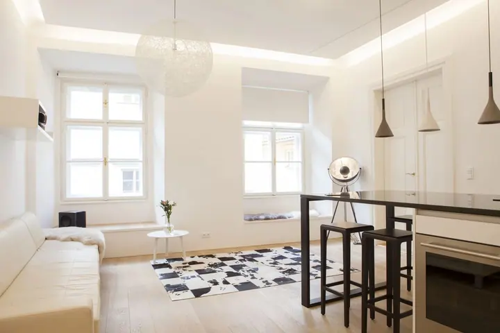

Portréty
Portréty jsou moje hlavní práce. Pracuji s výrazným světlem, stínem a barevným pozadím, ať v ateliéru, nebo venku v ulicích.

Portrétní, reklamní a realitní fotograf
Jmenuji se Petr Müller a žiji v Berlíně. Fotím hlavně portréty, ale také reklamu a interiéry. Baví mě výrazné světlo, hluboké stíny a klidné pohledy do objektivu.
Zeptat se na termín
Portréty jsou moje hlavní práce. Pracuji s výrazným světlem, stínem a barevným pozadím, ať v ateliéru, nebo venku v ulicích.
Fotím produkty a reklamní snímky pro značky. Čistá kompozice a světlo, které ukáže detail.
Fotím byty a interiéry tak, aby byl prostor světlý, přehledný a vzdušný. Hodí se k prodeji, pronájmu i do prezentace.
Jmenuji se Petr Müller a portréty jsou to, k čemu se ve fotografii vracím nejčastěji. Rád pracuji s tmou, se silnou barvou pozadí nebo s černobílou, protože tak vynikne tvář a výraz člověka.
Kromě portrétů fotím i reklamu a reality. U produktů a interiérů jde o jiný přístup: čisté světlo, přehlednou kompozici a pozornost k detailu.
Žiji v Berlíně. Na svém webu vedu i fotografický deník, kde najdete, na čem zrovna pracuji.
Napište mi, co potřebujete: portrét, reklamní snímky, nebo fotky interiéru. Společně ujasníme představu a termín.
Probereme místo, světlo a styl. U portrétů i to, co si vzít na sebe, u interiérů, jak prostor připravit.
Fotíme v klidu a bez spěchu. Na portrétu vás vedu pózami, abyste se nemuseli ničeho bát.
Vyberu nejlepší snímky, upravím je v jednotném stylu a pošlu vám je v online galerii.
Vůbec ne. Během focení vás povedu a řeknu, jak se postavit a kam se dívat.
Podle domluvy v interiéru s tmavým nebo barevným pozadím, nebo venku v ulicích. Místo vybereme spolu podle toho, jakou náladu chcete.
Ano, fotím reklamní a produktové snímky. Napište mi, k čemu je potřebujete, a domluvíme rozsah.
Stačí uklidit drobnosti z povrchů, roztáhnout závěsy a rozsvítit. Zbytek doladíme na místě.